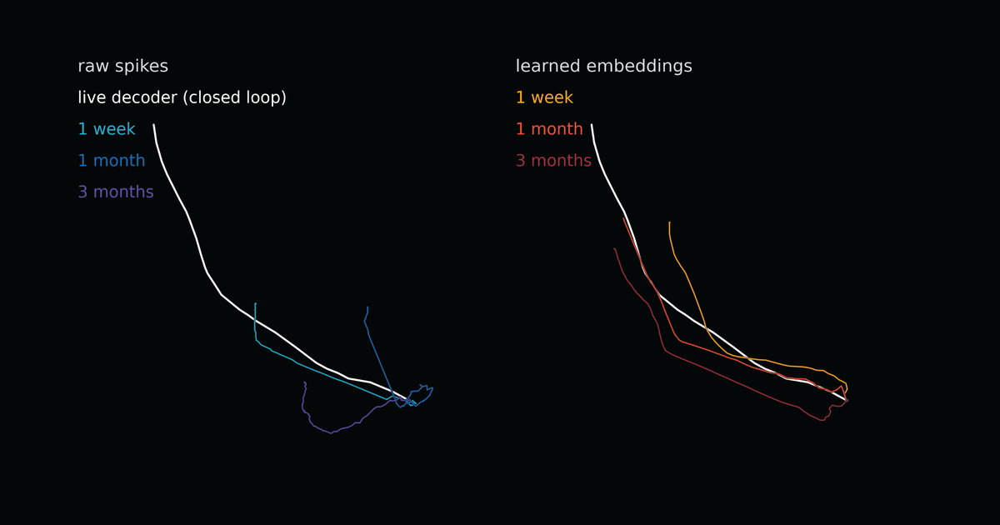

Executive Summary
This article reads the technical note Neuralink posted on October 1, 2026, "Pretraining on 50,000 Hours of Unlabeled Brain Data." In the two years since its clinical trial began, more than 50,000 hours of neural recording has come off the participants. Most of it accumulated with no task assigned at all, and by the company's own account almost none of it had been put to work until recently. Neuralink took those recordings and used them to teach a cursor decoding model first.
The number that stands out is 11.32. Participant P15 drove a cursor at an information throughput of 11.32 bits per second, where the previous record stood at 10.39. Recalibration, which used to take 55 minutes a week, came down to ten minutes a week for some participants. The same note is just as plain about the limits. Every real-time result came from a model trained on one participant's data alone, and a decoder built by pooling several participants was no better in real time.
Sections 1 through 3 are facts recorded in Neuralink's technical note, in the reporting that carried it, and in academic papers that take up the same question. Section 4 is this article's reading of those facts through the eyes of someone who works with data.
Key Numbers
Of the four numbers below, the first is how much recording went into pretraining, the middle two are the scores that changed afterward, and the last is the limit Neuralink stated itself.
Sources: Neuralink technical note (2026-10-01), AI Times reporting (2026-10-05).
50,000 hours
Unlabeled neural recording over two years
One early participant contributed 9,000 hours and 22.4 billion spikes
11.32 bits/s
Cursor information throughput
Previous record 10.39 bits. Six participants rewrote their personal best
55 min → 10 min
Recalibration time per week
Recalibration usually ran ten minutes every morning, and it fell for some participants
No gain
Decoder pooling several participants
No better than a single-participant model in real time. Only offline transfer worked
Hours that piled up with no task attached
To move a cursor with brain signals, a model needs a chance to line the signals up against intent. So the method up to now hands the participant a task. The participant moves a cursor toward a dot on the screen, and the neural activity that ran at that moment gets an answer attached to it: this person meant to go up and to the right. Recordings carrying that answer are labeled data. Gathering them is expensive, because a person has to set aside time to do the task, and there is a ceiling on how much you can collect.
An implant is not switched on only during task time. The electrodes keep reading while the participant eats, while they watch TV, while they simply rest. No task is attached, so no answer can be attached either, and the recording stays unlabeled. In the two years since the clinical trial began, that pile passed 50,000 hours. One early participant contributed more than 9,000 hours alone, which comes to 22.4 billion spikes. In Neuralink's own phrasing, this information had gone almost unused until recently.
Something else was getting thrown away. Neural signals do not hold still. Electrodes shift by tiny amounts and the surrounding tissue reacts, so the signal coming from the same intent differs a little from one day to the next. However well a decoder is built, performance falls off over time and the user recalibrates. Neuralink puts that cost at an average of 55 minutes a week. Usually it means ten minutes every morning, and separate decoders may be needed per function, one for typing and another for games. Data produced during recalibration also got discarded once it had been used.
Three things pretraining changed
Neuralink trained a neural encoder separately first, before teaching the model anything about cursor decoding. Each participant gets an encoder of their own, trained on thousands of hours of recording from that one person. The architecture builds on Mamba2 and treats spikes the way a language model treats tokens. Its training objective is spatially masked auto-Poisson regression. Half the channels are shown and the model has to guess what happened in the other half, which pushes it to learn how populations of neurons move together instead of memorizing channels one by one.
The result is an embedding that turns a shaky raw signal into a steadier representation. A cursor decoder then rides on top of that embedding. Instead of taking raw signals whose shape changes by the day, it takes a representation that wobbles less, and labeled recordings are needed only in the final layer laid over it.
Three axes changed. First comes speed, though what gets measured is not how fast the cursor crosses the screen. Information throughput converts into bits how quickly and accurately a target was picked out within a given span of time, so a target that is smaller and farther away yields a higher value for the same movement. Participant P15 recorded 11.32 bits per second and passed the previous 10.39, and the median across participants sits around 10 bits. Six people rewrote their personal best, and three of those went past the old record itself. Second comes the recalibration burden. The 55 minutes a week came down to roughly ten minutes a week for some participants. Third comes decoder lifespan. Decoders used to need refitting every few days; some held their performance past three weeks, and one participant is still using a decoder that is a year and a half old. Five straight days at 10 bits on the same decoder has also been reported.

▲ This article collects the figures written in Neuralink's technical note into one chart.
The caveats have to be read alongside. Every one of these numbers comes from the company itself, with no peer-reviewed paper and no independent replication yet. The comparison that places 11.32 bits above the average for people without disabilities has never been confirmed from outside either. The device is built for clinical trials and is not an approved product. And Neuralink wrote down one more limit of its own. Every live score published so far belongs to a model that learned from one person's data and nothing else. A decoder that merged several people's recordings did not beat that mark in real time. One offline result runs the other way: a model from one participant moved to another participant with 99% of its weights frozen, and it beat the decoder that person had been using.
Other studies stop much earlier
The number 50,000 hours reads differently once reports from the academic side sit next to it. Two recent studies measured head-on how much pretraining data has to go into a neural decoder before performance rises.
3.1At 2,000 hours the scores went down
One of them is "A Generalist Intracortical Motor Decoder" (NDT3), published at NeurIPS 2025. Its authors gathered data from more than 30 monkeys and humans across ten labs and scaled pretraining up to 2,000 hours, measuring as they went. The outcome was not the expected one. On a 45-million-parameter model, the version trained on 2,000 hours performed worse than the version trained on 200. Only at 350 million parameters did the degradation stop. The authors diagnosed that pretraining data of a different character can interfere with learning the evaluation task, and they wrote that some tasks gained nothing at all from scale.
3.2More hours, not much more diversity
The other is iBrain, trained on intracranial EEG and spikes together. Measured in four brackets of 500, 1,000, 2,000 and 7,160 hours, performance rose monotonically. The coefficient of determination on the MC-Maze task went from 0.882 to 0.914, and Area2-Bump from 0.887 to 0.903. Its authors noted themselves that the gains are not large and get smaller past 2,000 hours. The explanation they gave for that is the most important sentence in this article. Neural recordings carry a great deal of redundancy within the same participant and the same session, so the real diversity does not grow as fast as the recorded hours do. They closed by saying that widening the diversity of participants, tasks and collection conditions, alongside adding volume, is likely to help.
▲ This article summarizes what two academic studies found when they scaled up pretraining data.
Held up against Neuralink's announcement, one of the two papers meshes and the other has not been settled yet. The one that meshes is NDT3. Its report that recordings gathered from different places interfere with each other, and Neuralink's caveat that a decoder pooling several participants did not improve in real time, point at the same wall. The one left unsettled is iBrain. At precisely the spot where iBrain saw redundancy accumulating when only the hours within one person grow, Neuralink poured in 50,000 hours and set a record. The score arrived well past the stretch iBrain flagged as saturating.
That does not mean iBrain's warning has been broken. Neuralink has never published a performance curve split by data bracket, so nobody outside can tell whether the record came out because of 50,000 hours or was already there at 2,000. Neither of the two academic studies looked inside Neuralink's dataset. Their numbers come from other people's brains, other electrodes, other tasks. The certainty available right now stops at one point: the belief that more volume always means better has already broken several times in this field.
Why Pebblous Is Watching This Announcement
Piles of data that sit around with no label on them are not confined to brain signals. Sensor logs on a factory floor, vehicle driving records, call center recordings; every organization has a folder it keeps on the thought that it will come in handy someday. The Neuralink case is welcome because it proves that pile is not useless, and it is uncomfortable because it shows at the same time that making it usable is not a question of storage capacity.
The habit of counting data size in hours deserves a second look. The phrase 50,000 hours speaks to volume, and as iBrain pointed out, it does not speak to effective diversity. Ten hours spent by the same person in the same posture looking at the same screen is not ten hours' worth of information. Yet raising diversity does not become the answer automatically. NDT3 showed the opposite side of it. Mixing material collected elsewhere made the pieces interfere, and only after model capacity grew nearly eightfold was the damage held off. Diversity carries a price tag of its own.
So this announcement leaves three questions for anyone who handles data. Can you count, right now, how many distinct conditions and states sit inside the unlabeled pile you have stored? Among people, equipment, time of day and type of work, which axis does the model actually need? And what do you look at to judge whether the diversity you added helps the model or interferes with it the way it did in NDT3? That is why Pebblous asks about readiness before volume whenever AI-Ready Data comes up.
Thanks for reading this far. Neuralink's technical note is on the Neuralink updates page, and a write-up of the record is at Interesting Engineering. Rather than how many hours of unlabeled data you have stored, count how many distinct conditions sit inside it, and tell us what the number turns out to be.
References
Primary Announcement & Coverage
- 1.Neuralink. (2026). "Pretraining on 50,000 Hours of Unlabeled Brain Data." Neuralink Updates, 2026-10-01.
- 2.AI Times. (2026). "Neuralink pretrains on 50,000 hours of brain data, opening the 'foundation model' era for BCI." 2026-10-05. (in Korean)
- 3.Interesting Engineering. (2026). "Neuralink brain implant sets 11.32-bit/s cursor-control record." 2026-10.
- 4.ExplainX. (2026). "Neuralink 50,000-Hour BCI Pretraining: 11.32 bps Record." 2026-10.
Academic
- 5.Ye, J., Rizzoglio, F., et al. (2025). "A Generalist Intracortical Motor Decoder." NeurIPS 2025. (Preprint: bioRxiv 2025.02.02.634313)
- 6."iBrain: A Unified Foundation Model Reading the Brain from Surface to Spikes." arXiv:2609.06960.
- 7."Pretraining for Sample-Efficient Neural Interfaces." arXiv:2609.13507.